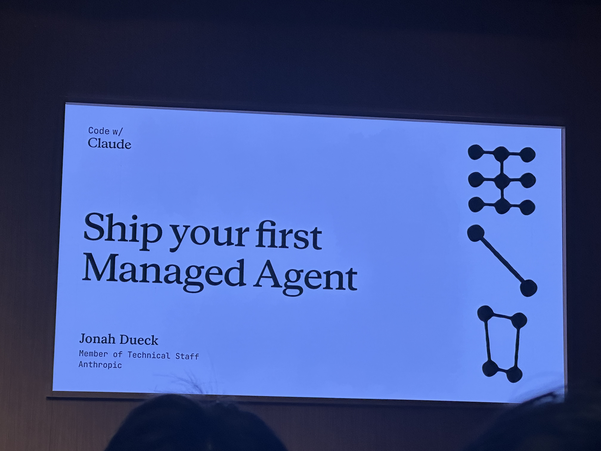
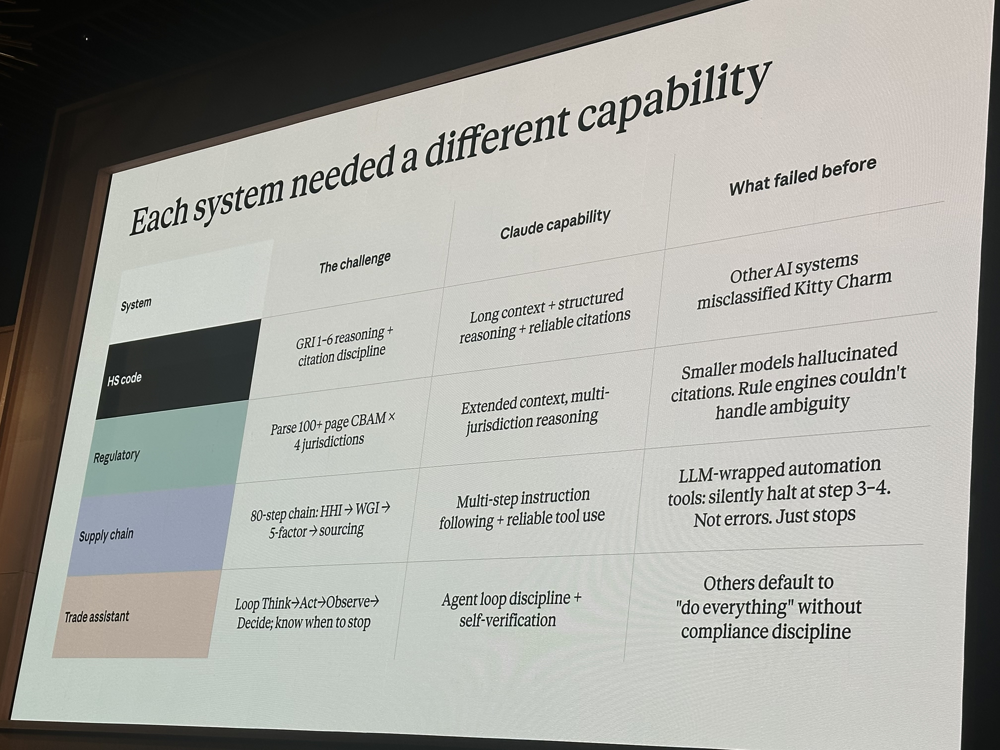
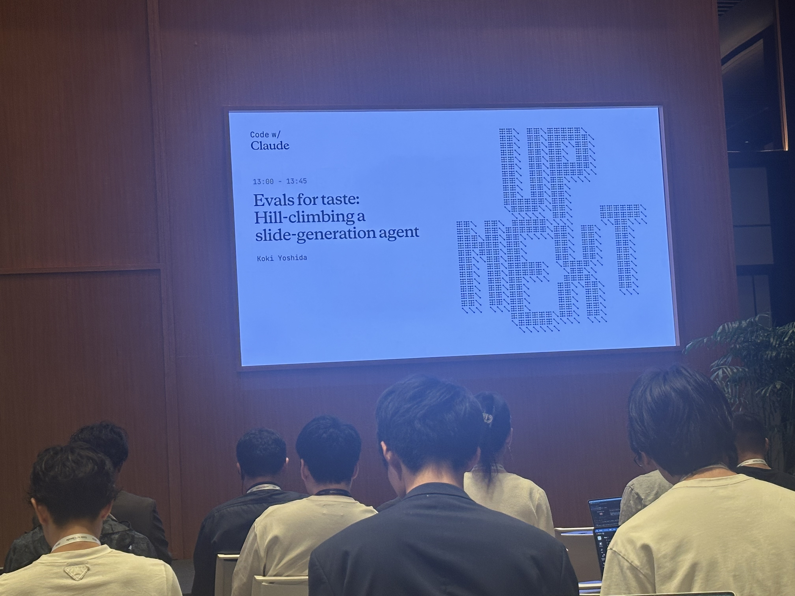
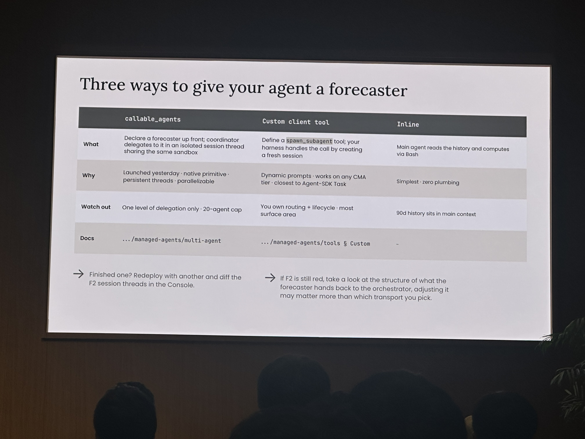

About this archive
What this is
These pages collect the sessions I attended or photographed at Code with Claude Tokyo Extended. The goal is to make the material easier to revisit than a camera roll: visible slide content has been rebuilt as HTML, demo-heavy sections preserve the screenshots, and every reconstructed section links back to its original image.
Presentation library
Open a reconstructed session
Click any session card or its button to open the full presentation. Source screenshots are expandable inside each page.
How We Claude Code
Content slides rebuilt as HTML, with demo slides isolated and the IMG_7403/7404 verification-contract demo extracted as A/B/C content.
Open presentation
Ship Your First Managed Agent
Managed-agent workshop reconstructed from content slides, with IMG_7416 kept as the main expandable demo screenshot.
Open presentation
The 1% Problem
Gahee Seo's benchmark story rebuilt with the visible tables, lessons, and demo output reconstructed as HTML.
Open presentationAgents That Remember
Memory-store workflow, no-memory baseline, console inspection, and Dreaming slides reconstructed with source images appended.
Open presentation
Evals For Taste
Eval definitions, benchmark categories, lifecycle loop, and grader types reconstructed from the workshop photos.
Open presentation
Tool, Skill, Or Subagent?
Karan Sampath's decomposition framework, final agent shape, and eval results reconstructed from the available photos.
Open presentationRewriting Bun In Rust
Jarred Sumner's rewrite workflow, adversarial review loop, throughput tactics, results, and closing playbook reconstructed with all source images appended.
Open presentation